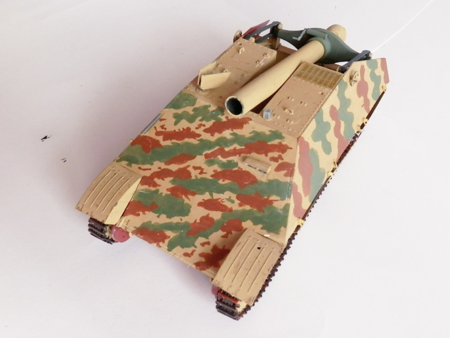
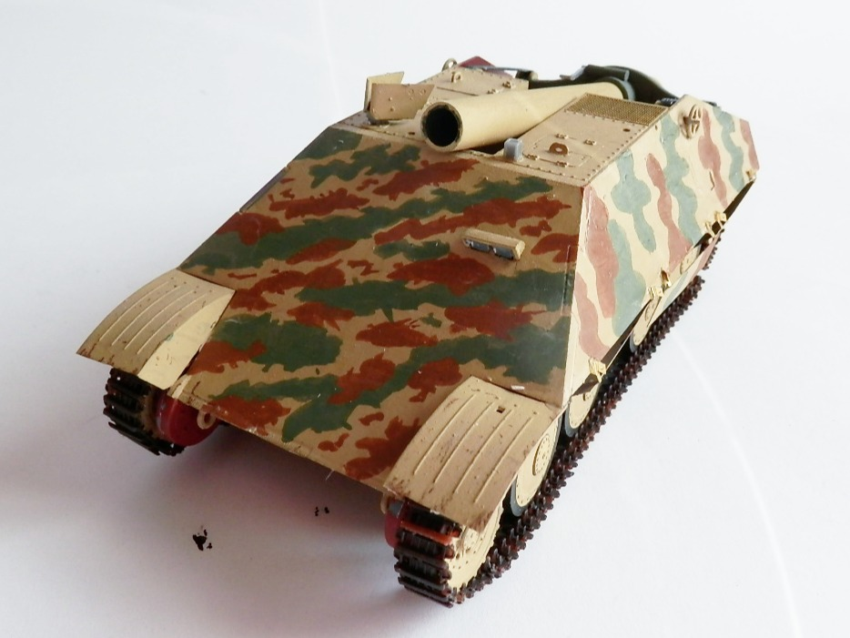
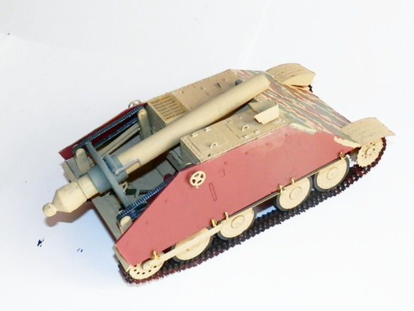
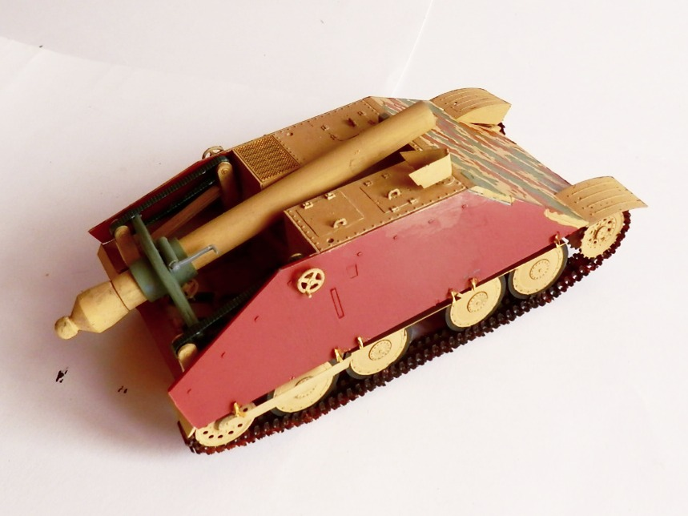
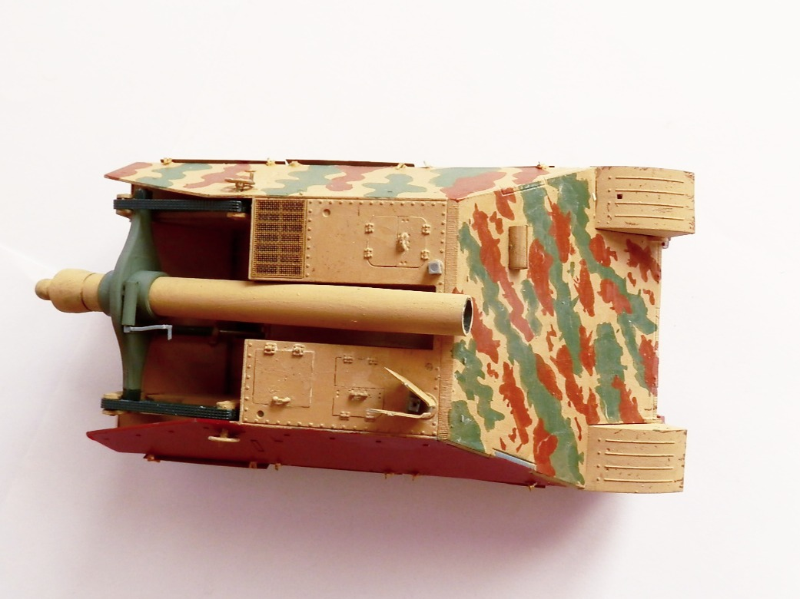
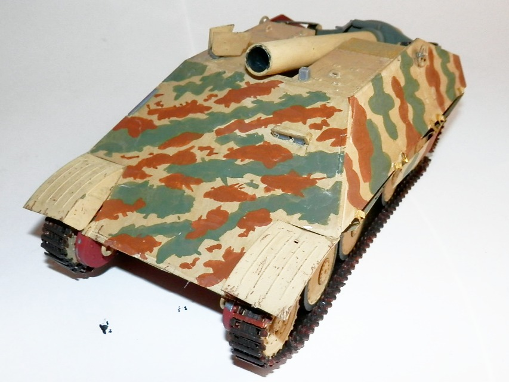
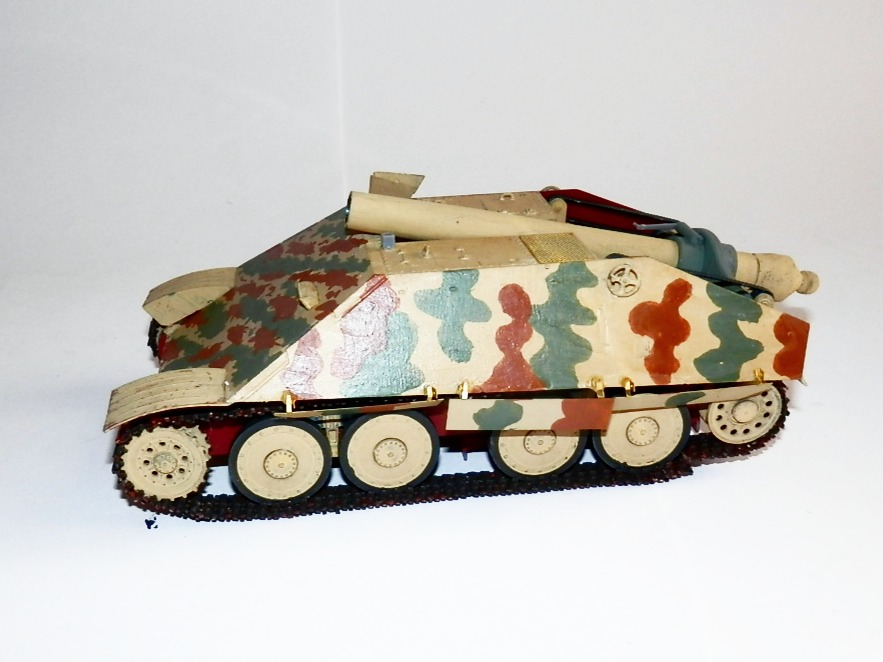
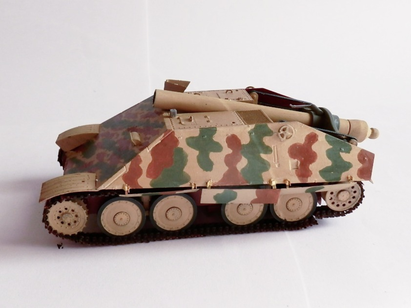
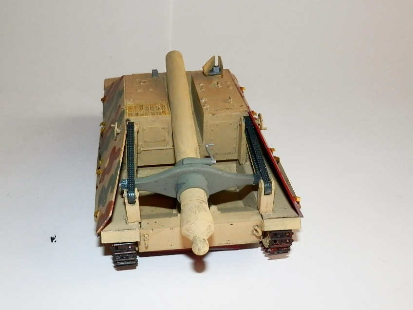

Mezzi militari · scale model archive
28cm Sturm Moerser on T38 D
28cm Sturm Moerser on T38 D — Kit: Amusing Hobby, Scale: 1/35. Interesting 'What if' kit of an heavy mortar on a light Skoda 38T hull! I tried to…

Photo gallery








English description
Interesting 'What if' kit of an heavy mortar on a light Skoda 38T hull! I tried to reproduce different camo styles. The model screams for some weathering
Descrizione italiana
Interessante kit “what if” di un mortaio pesante montato sullo scafo leggero dello Skoda 38T. Ho provato a riprodurre diversi stili di mimetica. Il modello chiede a gran voce un po’ di invecchiamento.